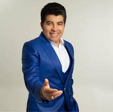

Gerardo Morán "El Más Querido"
Biografía
Gerardo Antonio Morán Andrade (Guayaquil, Ecuador, 2 de diciembre de 1968), conocido popularmente como "El Más Querido", es un cantante ecuatoriano de música popular y tecnocumbia. Es uno de los artistas más exitosos y con mayor trayectoria en el género dentro del país. Desde muy joven, Gerardo Morán mostró interés por la música, influenciado por artistas populares de la época. Inició su carrera musical a finales de la década de 1980, buscando un espacio en un género que comenzaba a ganar fuerza en Ecuador. Su salto a la fama se consolidó en la década de 1990, con canciones que fusionaban ritmos tropicales con elementos de la música andina y la tecnocumbia. Su carisma en el escenario, su voz potente y sus letras que conectaban con el sentir popular lo convirtieron rápidamente en un ídolo. Entre sus mayores éxitos se encuentran canciones como "En Vida", que se ha convertido en un himno de celebración y alegría; "Lágrimas de Hombre", un tema melancólico que resonó con muchas personas; "Sufro", otra canción de gran popularidad; "Amor de un Solo Sentido", y la festiva "El Aguardientosky". Su discografía es extensa y cuenta con numerosos álbumes que han alcanzado altas ventas en Ecuador. A lo largo de su carrera, Gerardo Morán ha realizado innumerables conciertos a lo largo y ancho del Ecuador, así como presentaciones en otros países donde la música ecuatoriana tiene acogida. Su estilo musical, alegre y bailable en muchos de sus temas, pero también melancólico y sentimental en otros, le ha valido el cariño y la fidelidad de un público multigeneracional. "El Más Querido" se ha mantenido como una figura constante en la escena musical ecuatoriana durante décadas, adaptándose a los nuevos tiempos sin perder su esencia. Su música es parte de las celebraciones, las fiestas y también de los momentos de reflexión de muchos ecuatorianos. Su contribución a la música popular del país es innegable, y su carisma y cercanía con el público lo han consolidado como uno de los artistas más importantes y queridos de Ecuador.
Estilo Artístico
Su estilo artístico se caracteriza por una fusión muy particular de elementos tradicionales del folclore andino con ritmos y arreglos modernos y bailables.
Aquí te desgloso los elementos clave de su estilo artístico:
- Raíces Andinas: La base de su música está profundamente arraigada en los ritmos y melodías tradicionales de la Sierra ecuatoriana. Se pueden apreciar influencias del sanjuanito, el pasacalle, y otros géneros folclóricos andinos. Esto se manifiesta en el uso de instrumentos como el requinto, la guitarra, el charango (aunque no siempre de forma prominente en sus arreglos modernos), y melodías que evocan la nostalgia y la alegría de la vida andina.
- Ritmos Bailables y Modernos: A diferencia de interpretaciones más puristas del folclore, Gerardo Morán incorpora elementos de la música popular contemporánea. Sus canciones suelen tener un ritmo marcado y bailable, que invita a la celebración y a la fiesta. Se aprecian influencias de la cumbia, el paseíto, y otros ritmos tropicales que le dan un toque más comercial y accesible a un público amplio.
- Letras Costumbristas y Sentidas: Sus letras a menudo hablan de temas cotidianos, historias de amor y desamor, anécdotas de la vida rural y urbana ecuatoriana, y sentimientos profundos. Utiliza un lenguaje sencillo y directo, conectando fácilmente con su audiencia. Sus canciones suelen tener un tono melancólico pero también esperanzador, reflejando las vivencias del pueblo ecuatoriano.
- Voz Melódica y Expresiva: Gerardo Morán posee una voz potente y melódica con un timbre característico. Su interpretación es sentida y apasionada, transmitiendo la emoción de sus letras de manera muy efectiva. Su estilo vocal se adapta tanto a los momentos más rítmicos como a las baladas más emotivas.
- Arreglos Musicales Elaborados: Si bien la base puede ser folclórica, sus arreglos musicales suelen ser ricos y bien producidos, incorporando instrumentos modernos como teclados, bajo eléctrico, batería y secciones de viento. Estos arreglos le dan a su música un sonido contemporáneo sin perder la esencia de sus raíces.
- Imagen Carismática y Cercana: Su presencia en el escenario y su interacción con el público son parte integral de su estilo artístico. Se muestra como una persona cercana, humilde y carismática, lo que ha contribuido enormemente a su popularidad y al cariño que el público le tiene.
- En Vida
- El Provinciano
- Lágrimas de Hombre
- Lejos de Ti
- Con la Misma Moneda
- Amor de un Solo Sentido
- Ya no seré más tu Pañuelito
- El Aguardientosky
- Cariñito
- La Llamada de mi Ex
- Verbenita
Lista Detallada de Canciones
Exitos Musicales Destacados
EN VIDA
LAGRIMAS DE HOMBRE
Información de Contacto
Redes sociales: https://www.facebook.com/GerardoMoranOficial